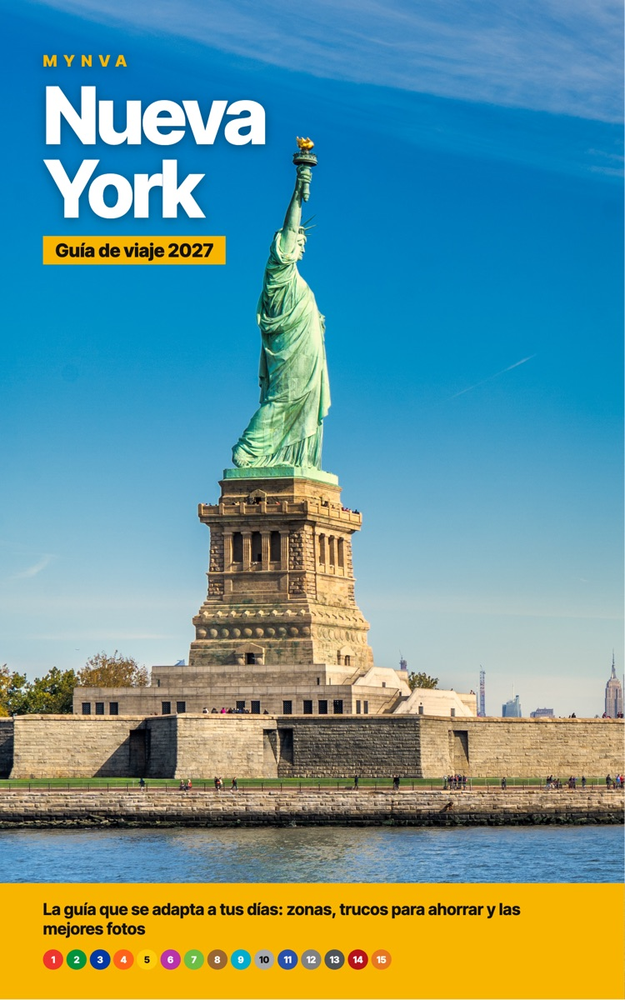

Mapa gratis de Nueva York por zonas
414 sitios en 15 zonas: Midtown, Central Park, Downtown, DUMBO, Chinatown, el Village, Chelsea, Flatiron, Harlem, Williamsburg, Queens, el Bronx y más. Ábrelo en el móvil y tendrás cada recomendación a un toque.
Cinco trucos que se notan en el bolsillo
Los que más se notan en el bolsillo, y casi todos son oficiales.
El ferri de Staten Island
Pasa cerca de la Estatua de la Libertad y no cuesta nada. No compres billetes a los vendedores de Battery Park.
El tope del metro
Cada viaje cuesta 3 $, pero con el mismo móvil o tarjeta no pagas más de 35 $ en 7 días seguidos. Desde el viaje 12, gratis.
La lotería de entradas
Apúntate gratis a las loterías digitales. Si te toca, entras por 30–49 $, frente a los unos 130 $ de media.
Horas gratis
Varios museos tienen horas gratis o de pago voluntario para turistas. Mira el día antes de planificar la semana.
La ESTA, solo en la web oficial
Cuesta 40,62 $. Las webs intermediarias cobran el doble o más por lo mismo.
¿ESTA o visado? Depende de tu pasaporte
Si tienes pasaporte español o chileno, basta con la ESTA. Se tramita en la web oficial, esta.cbp.dhs.gov, y cuesta 40,62 $. Hazla el mismo día en que compres los vuelos: si te la niegan, aún tendrás tiempo de pedir visado.
Si tu pasaporte es de otro país latinoamericano, como México, Colombia, Argentina o Perú, necesitas el visado B1/B2. Míralo antes de pagar nada.
Lo que no es gratis, aunque lo leas en internet
- El Met y el MoMA: sus entradas gratis o de pago voluntario son para residentes. Un turista paga 30 $.
- La devolución de impuestos en el aeropuerto: en Estados Unidos no existe.
- El Guggenheim: no es gratis los sábados. Hay pago voluntario los martes y domingos por la tarde.
- El museo del 11-S: la franja gratuita es la tarde del lunes, con entradas que salen ese mismo día a las 7:00 de Nueva York.
Qué dejar resuelto antes de volar
Lo que conviene tener resuelto antes de coger el avión.
eSIM Holafly
Datos ilimitados desde que aterrizas, sin cambiar de tarjeta.
Ver HolaflySeguro de viaje IATI
En Estados Unidos un día de hospital cuesta miles de euros. No viajes sin seguro médico.
Ver IATIRevolut
Paga en dólares sin comisión de cambio (y recuerda: elige siempre USD en el datáfono).
Abrir RevolutESTA (solo la web oficial)
40,62 $ en la web del Gobierno de EE. UU. Las webs intermediarias cobran el doble por lo mismo.
esta.cbp.dhs.govDónde dormir sin pagar de más
Reserva con cancelación gratuita y vuelve a mirar el precio unas semanas antes: si ha bajado, cancelas y reservas de nuevo.
Booking
Filtra por «cancelación gratuita» y compara siempre el precio total con tasas.
Buscar hotelEntradas y tours: qué compensa y qué no
Solo lo que de verdad compensa. Si algo es gratis o se hace mejor por libre, te lo decimos aunque no ganemos nada.
Tour de Contrastes (Civitatis)
Bronx, Harlem, Queens y Brooklyn en una mañana, con guía en español.
Ver tourSUMMIT, Edge, Top of the Rock
Compra con antelación y compara franjas: el precio cambia según el día y la hora.
Ver entradasCityPASS
Solo compensa si vas a usar todas sus atracciones de pago. Haz la cuenta antes de comprarlo.
Ver CityPASSQué hay en el libro

Nueva York: Guía de viaje 2027 divide la ciudad en 15 zonas, cada una con estrellas, tiempo y coste, para que montes el viaje como un puzle. Incluye planes de 3, 5, 7 y 10 días, 102 trucos para ahorrar, 11 estafas explicadas, un ranking de atardeceres y dónde colocarte para hacer cada foto.
Próximamente en Amazon
Quién hay detrás
Somos E. S. y N. H., una pareja que firma como MYNVA. En octubre de 2026 viajamos a Nueva York con las mismas dudas que tú. Separamos lo que vivimos de lo que hemos comprobado en fuentes oficiales, y si lo gratis es mejor, lo decimos.
Preguntas frecuentes
¿El mapa es gratis?
Sí. No hace falta comprar el libro ni registrarse.
¿Cuánto cuesta el metro en una semana?
No pagas más de 35 $ en 7 días seguidos si usas siempre el mismo móvil o tarjeta.
¿Sirve la web si no tengo el libro?
Sí. Aquí tienes el mapa y los recursos. El libro añade las zonas a fondo, los itinerarios y los 102 trucos.
¿Cada cuánto actualizáis los datos?
Indicamos la fecha de revisión al pie. Si encuentras un precio distinto, escríbenos.
Escríbenos
¿Tienes una duda o has encontrado un precio distinto o un sitio cerrado? Cuéntanoslo.
Escríbenos